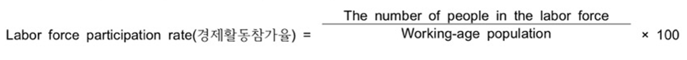
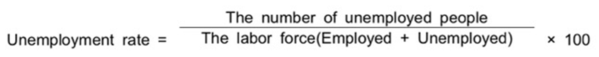

Definition of Unemployment
-> The labor force is the sum of the employment and the unemployed and the unemployed

Labor force(total number of workers, employed and unemployed) = Number of Employed + Number of Unemployed
The labor force participation rate is the percentage of the population age 16 or older that is in the labor force.

The unemployment rate is the percentage of the labor force that is unemployed and actively looking for work.
The unemployment rate is a good indicator of how hard it is to find work given the state of the economy.

But unemployment rate is not a perfect measure.